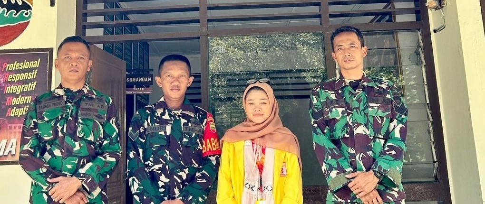

HUBUNGI KORAMIL 08/SECANGGANG - KAMI SIAP MELAYANI MASYARAKAT

Koramil 08/Secanggang
foto bersama mahasiswa pengembang website dengan personel koramil
Informasi Pelayanan
📍Alamat: RFJM+FFF, Cinta Raja, Kec. Secanggang, Kabupaten Langkat, Sumatera Utara 20855
⏰Jam Pelayanan: Senin - Jumat, 07.00 - 16.00 WIB
👥Pelayanan: Pelayanan administrasi dan surat-menyurat.
* Pembinaan teritorial kepada masyarakat.
* Koordinasi kegiatan keamanan dan ketertiban wilayah.
* Informasi kegiatan Koramil dan Babinsa. 10 Orang
📢Kunjungan Langsung: Masyarakat dapat datang langsung ke Kantor Koramil 08/Secanggang pada jam pelayanan untuk memperoleh informasi dan pelayanan yang dibutuhkan.